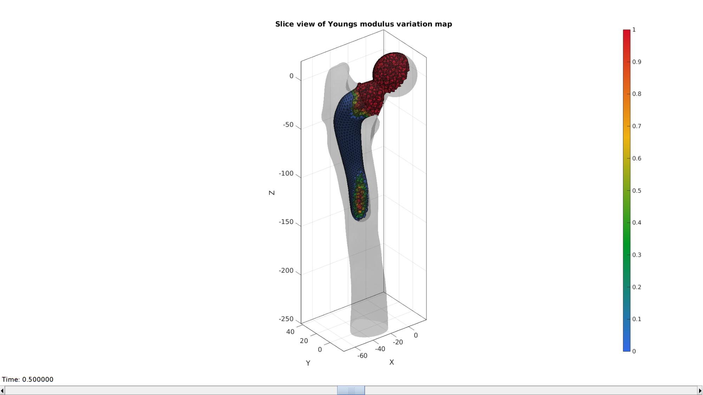
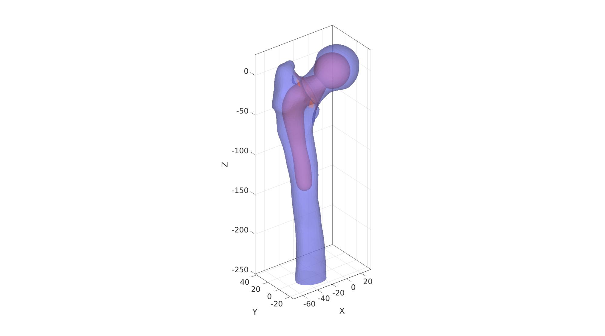
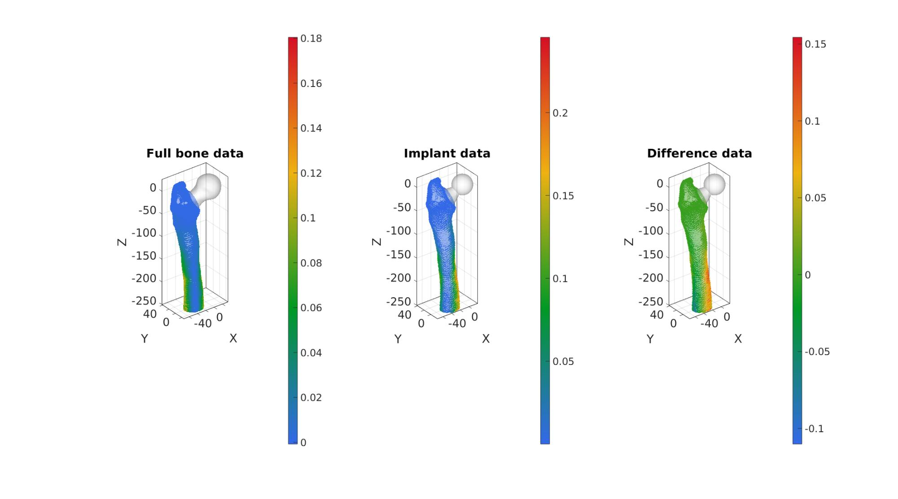
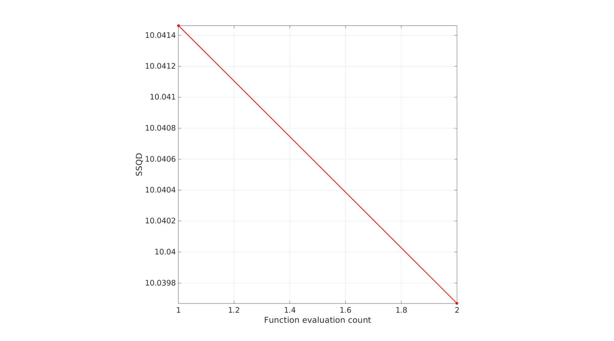
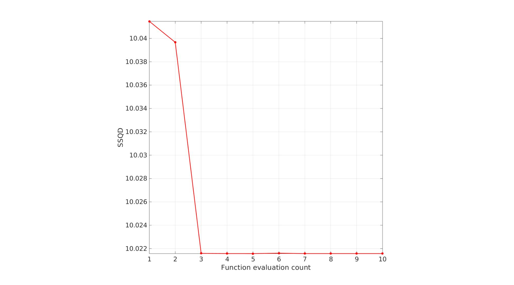

DEMO_febio_0067_hip_implant_regional_stiffness_optimize_01.m
Below is a demonstration for:
- Importing bone geometry
- Building geometry for a custom hip implant
- Evaluating the implant using FEA
Contents
- Keywords
- Plot settings
- Control parameters
- Import bone model
- Compute derived control parameters
- Cut bone end off
- Cut femoral head off
- Add inner bone surface for implant to rest on (will attach to collar)
- Create implant spherical head
- Build colar
- Build neck
- Define shaft
- Join bone and implant surfaces
- Create tetrahedral elements for both regions
- Define material regions
- Define implant spatialy varying parameters
- Visualizing solid mesh
- Load SED data from non-implant model and form interpolation function
- Find femoral head
- Work out force distribution on femoral head surface nodes
- Marking muscle locations
- Muscle force definition
- Defining prescribed forces
- Visualizing boundary conditions
- Defining the FEBio input structure
- Create structures for optimization
- Unnormalize and constrain parameters
- Access ouput data from optimization run
- Import FEBio results
- Importing element stress from a log file
- simulated results using anim8 to visualize and animate
- simulated results using anim8 to visualize and animate
- Process input
- Unnormalize and constrain parameters
- Setting material parameters
- START FEBio
- Update plot
- Collect output
Keywords
- febio_spec version 4.0
- febio, FEBio
- femur force loading
- force control boundary condition
- tetrahedral elements, tet4
- static, solid
- hyperelastic, Ogden
- displacement logfile
- stress logfile
clear; close all; clc;
Plot settings
fontSize=20; faceAlpha1=0.8; markerSize=40; markerSize2=20; lineWidth=3;
Control parameters
% Path names defaultFolder = fileparts(fileparts(mfilename('fullpath'))); savePath=fullfile(defaultFolder,'data','temp'); pathNameSTL=fullfile(defaultFolder,'data','STL'); loadName_SED=fullfile(savePath,'SED_no_implant.mat'); if exist(loadName_SED,'file') disp('Using data from: DEMO_febio_0062_femur_load_01'); else warning('This demo requires that you run this demo first: DEMO_febio_0062_femur_load_01. Running DEMO_febio_0062_femur_load_01 now... ') DEMO_febio_0062_femur_load_01 end % Defining file names febioFebFileNamePart='tempModel'; febioFebFileName=fullfile(savePath,[febioFebFileNamePart,'.feb']); %FEB file name febioLogFileName=fullfile(savePath,[febioFebFileNamePart,'.txt']); %FEBio log file name febioLogFileName_disp=[febioFebFileNamePart,'_disp_out.txt']; %Log file name for exporting displacancellousBone febioLogFileName_force=[febioFebFileNamePart,'_force_out.txt']; %Log file name for exporting force febioLogFileName_strainEnergy=[febioFebFileNamePart,'_energy_out.txt']; %Log file name for exporting strain energy density febioLogFileName_stress=[febioFebFileNamePart,'_stress_out.txt']; %Log file name for exporting stress %Optimisation settings maxNumberIterations=100; %Maximum number of optimization iterations maxNumberFunctionEvaluations=maxNumberIterations*10; %Maximum number of function evaluations, N.B. multiple evaluations are used per iteration functionTolerance=1e-6; %Tolerance on objective function value parameterTolerance=1e-6; %Tolerance on parameter variation displayTypeIterations='iter'; optimMethod=2; %1=NelderMead, 2=Levenberg-Marquardt evalMode=2; %1=test run, 2=optimization optimType=1; %1=homogenous, 2=spat.var %Geometric parameters distanceCut=250; %Distance from femur to cut bone at corticalThickness=3; %Thickness used for cortical material definition volumeFactors=[2 2]; %Factor to scale desired volume for interior elements w.r.t. boundary elements implantLayerThickness=6; %Thickness used for implant region definition distanceExclude=10; stemCut=32; numSmoothStepsCutBottom=5; numSmoothStepsCutFemur=25; implantOffset=5; implantOffsetCollar=2; implantHeadRadius=20; implantStickRadius=10; implantCollarThickness=3; implantShaftLengthFraction=1/4; numLoftGuideSlicesShaft=8; numSmoothStepsShaft=20; %Define applied force forceTotal=[-405 -246 -1717.5]; %x,y,z force in Newton forceAbductor=[564.831 -132.696 704.511]; forceVastusLateralis_Walking=[-7.857 -161.505 -811.017]; forceVastusLateralis_StairClimbing=[-19.206 -195.552 -1,179.423]; forceVastusMedialis_StairClimbing=[-76.824 -345.708 -2,331.783]; forceVM_inactive=[0 0 0]; n=1; switch n case 1 forceVastusLateralis=forceVastusLateralis_Walking; forceVastusMedialis=forceVM_inactive; case 2 forceVastusLateralis=forceVastusLateralis_StairClimbing; forceVastusMedialis=forceVastusMedialis_StairClimbing; otherwise forceVastusLateralis=forceVastusLateralis_StairClimbing; forceVastusMedialis=forceVastusMedialis_StairClimbing; end % Distance markers and scaling factor zLevelWidthMeasure = -75; zLevelFCML = -395; scaleFactorSize=1; distanceMuscleAttachAbductor=15; distanceMuscleVastusLateralis=10; distanceMuscleAttachVastusMedialis=10; %Material parameters (MPa if spatial units are mm) % Cortical bone E_youngs1=17000; %Youngs modulus nu1=0.3; %Poissons ratio % Cancellous bone E_youngs2=1500; %Youngs modulus nu2=0.25; %Poissons ratio %Youngs moduli for implant E_youngs_min=15000; E_youngs_max=110000; nu_implant=0.3; %Poissons ratio switch optimType case 1 %homogeneous (no spatial variation) paramContraints=[E_youngs_min E_youngs_max]; paramInitial=mean([E_youngs_min E_youngs_max]); %Initial parameters case 2 %Spatially varying according to map paramContraints=[E_youngs_min E_youngs_max; E_youngs_min E_youngs_max]; paramInitial=mean([E_youngs_min E_youngs_max])*ones(1,2); %Initial parameters end % FEA control settings numTimeSteps=5; %Number of time steps desired max_refs=25; %Max reforms max_ups=0; %Set to zero to use full-Newton iterations opt_iter=6; %Optimum number of iterations max_retries=5; %Maximum number of retires dtmin=(1/numTimeSteps)/100; %Minimum time step size dtmax=1/numTimeSteps; %Maximum time step size runMode='external'; %'external' or 'internal'
Using data from: DEMO_febio_0062_femur_load_01
Import bone model
[stlStruct] = import_STL(fullfile(pathNameSTL,'femur_iso.stl')); F_bone=stlStruct.solidFaces{1}; %Faces V_bone=stlStruct.solidVertices{1}; %Vertices V_bone=V_bone.*1000; [F_bone,V_bone]=mergeVertices(F_bone,V_bone); % Merging nodes Q1=euler2DCM([0 0 0.065*pi]); V_bone=V_bone*Q1; Q2=euler2DCM([-0.5*pi 0 0]); V_bone=V_bone*Q2; Q3=euler2DCM([0 0 0.36*pi]); V_bone=V_bone*Q3;
Compute derived control parameters
pointSpacing=mean(patchEdgeLengths(F_bone,V_bone)); %Points spacing of bone surface snapTolerance=mean(patchEdgeLengths(F_bone,V_bone))/100; %Tolerance for surface slicing femurHeight=max(V_bone(:,3))-min(V_bone(:,3)); %Height of the femur shaftDepthFromHead=femurHeight.*implantShaftLengthFraction;
Cut bone end off
%Cut bone [F_bone,V_bone,~,logicSide,~]=triSurfSlice(F_bone,V_bone,[],[0 0 -distanceCut],[0 0 1]); F_bone=F_bone(logicSide==0,:); [F_bone,V_bone]=patchCleanUnused(F_bone,V_bone); %Get boundary curve Eb=patchBoundary(F_bone); indCurve=edgeListToCurve(Eb); indCurve=indCurve(1:end-1); %Smooth curve edges cparSmooth.n=numSmoothStepsCutBottom; cparSmooth.Method='HC'; [V_Eb_smooth]=patchSmooth(Eb,V_bone(:,[1 2]),[],cparSmooth); V_bone(indCurve,[1 2])=V_Eb_smooth(indCurve,:); %Smooth mesh at curve clear cparSmooth cparSmooth.n=numSmoothStepsCutBottom; cparSmooth.Method='HC'; cparSmooth.RigidConstraints=indCurve; [V_bone]=patchSmooth(F_bone,V_bone,[],cparSmooth); %Mesh the bottom curfaces [F_bone2,V_bone2]=regionTriMesh3D({V_bone(indCurve,:)},pointSpacing,0,'linear'); if dot(mean(patchNormal(F_bone2,V_bone2)),[0 0 1])>0 F_bone2=fliplr(F_bone2); end %Join cut bone with bottom to created a single node shared closed surface [F_bone,V_bone,C_bone]=joinElementSets({F_bone,F_bone2},{V_bone,V_bone2}); [F_bone,V_bone]=mergeVertices(F_bone,V_bone);
Visualize cut surface
cFigure; hold on; title('The bone surface'); gpatch(F_bone,V_bone,'bw','k',1); axisGeom; camlight headlight; gdrawnow;
Cut femoral head off
%Set-up orientation and location of cutting plane n=vecnormalize([0 0 1]); %Normal direction to plane Q1=euler2DCM([0 -(63/180)*pi 0]); Q2=euler2DCM([0 0 (32/180)*pi]); Q=Q1*Q2; n=n*Q; P_cut=[0 0 0]-n*stemCut; %Point on plane %Slicing surface [Fc,Vc,Cc,logicSide,~]=triSurfSlice(F_bone,V_bone,C_bone,P_cut,n,snapTolerance); %Compose isolated cut geometry and boundary curves [F_bone_cut,V_bone_cut]=patchCleanUnused(Fc(logicSide,:),Vc); C_bone_cut=Cc(logicSide); Eb=patchBoundary(F_bone_cut); indCutCurve=edgeListToCurve(Eb); indCutCurve=indCutCurve(1:end-1); %Smoothing cut logicTouch=any(ismember(F_bone_cut,indCutCurve),2); indTouch=unique(F_bone_cut(logicTouch,:)); logicTouch=any(ismember(F_bone_cut,indTouch),2); indRigid=unique(F_bone_cut(~logicTouch,:)); indRigid=unique([indRigid(:);indCutCurve(:)]); clear cparSmooth cparSmooth.n=numSmoothStepsCutFemur; cparSmooth.RigidConstraints=indRigid; [V_bone_cut]=patchSmooth(F_bone_cut,V_bone_cut,[],cparSmooth); clear cparSmooth cparSmooth.n=numSmoothStepsCutFemur; [VEb]=patchSmooth(Eb,V_bone_cut,[],cparSmooth); V_bone_cut(indCutCurve,:)=VEb(indCutCurve,:); %Get curve points and centre coordinate V_bone_cut_curve=V_bone_cut(indCutCurve,:); PA=mean(V_bone_cut_curve,1); %Mean of cut curve (middle of cut)
Visualize cut surface
cFigure; hold on; title('The cut bone surface'); gpatch(F_bone_cut,V_bone_cut,'bw','k',1); plotV(V_bone_cut_curve,'r.-','MarkerSize',25,'LineWidth',3) axisGeom; camlight headlight; gdrawnow;

Add inner bone surface for implant to rest on (will attach to collar)
%Define collar curve V_collar_1=V_bone_cut_curve; V_collar_1=V_collar_1-PA; d=sqrt(sum(V_collar_1.^2,2)); shrinkFactor=(min(d(:))-implantOffsetCollar)./min(d(:)); V_collar_1=V_collar_1.*shrinkFactor; V_collar_1=V_collar_1+PA; V_collar_1=evenlySpaceCurve(V_collar_1,pointSpacing,'pchip',1); % Mesh cut bone top (space between collar curve and bone cut curve) [F_bone_top,V_bone_top]=regionTriMesh3D({V_bone_cut_curve,V_collar_1},[],0,'linear'); nTop=mean(patchNormal(F_bone_top,V_bone_top),1); if dot(nTop,n)<0 F_bone_top=fliplr(F_bone_top); end % Join and merge geometry [F_bone_cut,V_bone_cut,C_bone_cut]=joinElementSets({F_bone_cut,F_bone_top},{V_bone_cut,V_bone_top},{C_bone_cut,max(C_bone_cut(:))+ones(size(F_bone_top,1),1)}); [F_bone_cut,V_bone_cut]=mergeVertices(F_bone_cut,V_bone_cut);
Visualize bone with meshed top
cFigure; hold on; title('The cut bone surface with meshed top'); gpatch(F_bone_cut,V_bone_cut,C_bone_cut,'k',1); plotV(V_bone_cut_curve,'r.-','MarkerSize',15,'LineWidth',2) plotV(V_collar_1,'g.-','MarkerSize',15,'LineWidth',2) axisGeom; icolorbar; camlight headlight; gdrawnow;
Create implant spherical head
% Create sphere use will loop to define increasingly fine sphere % triangulations untill the point spacing of the sphere is smaller or equal % to the bone point spacing. nRef=1; while 1 [F_head,V_head]=geoSphere(nRef,implantHeadRadius); pointSpacingNow=mean(patchEdgeLengths(F_head,V_head)); if pointSpacingNow<=pointSpacing break else nRef=nRef+1; end end
Cutting the sphere
% Define ball cutting coordinate xc=cos(asin(implantStickRadius/implantHeadRadius))*implantHeadRadius; logicRight=V_head(:,1)>xc; logicCut=any(logicRight(F_head),2); logicCut=triSurfLogicSharpFix(F_head,logicCut,3); F_head=F_head(~logicCut,:); [F_head,V_head]=patchCleanUnused(F_head,V_head); Eb_head=patchBoundary(F_head); indB=unique(Eb_head(:)); [T,P,R] = cart2sph(V_head(:,2),V_head(:,3),V_head(:,1)); P(indB)=atan2(xc,implantHeadRadius*sin(acos(xc./implantHeadRadius))); [V_head(:,2),V_head(:,3),V_head(:,1)] = sph2cart(T,P,R); indHeadHole=edgeListToCurve(Eb_head); indHeadHole=indHeadHole(1:end-1); pointSpacingHead=mean(sqrt(sum(diff(V_head(indHeadHole,:),1,1).^2,2))); %Reorient ball nd=vecnormalize(-PA); %Vector pointing to mean of cut curve Q=vecPair2Rot(nd,[0 0 1]); %Rotation matrix for ball Q3=euler2DCM([0 -0.5*pi 0]); V_head=V_head*Q3; V_head=V_head*Q;
Visualize head
cFigure; hold on; title('The implant head surface'); gpatch(F_bone_cut,V_bone_cut,'w','none',0.5); gpatch(F_head,V_head,'bw','k',1); axisGeom; camlight headlight; gdrawnow;
Build colar
%Create color offset curve V_colarTop=V_collar_1; ve=[V_colarTop(2:end,:); V_colarTop(1,:)]-V_colarTop; vd=vecnormalize(cross(n(ones(size(ve,1),1),:),ve)); % vn2(:,1)=vn2(:,1)+collarThickness.*n; V_colarTop=V_colarTop+implantCollarThickness.*n; nc=ceil((pi*implantCollarThickness/2)/pointSpacingHead); if nc<4 nc=4; end vc=linspacen(V_collar_1,V_colarTop,nc); X=squeeze(vc(:,1,:)); Y=squeeze(vc(:,2,:)); Z=squeeze(vc(:,3,:)); t=repmat(linspace(-1,1,nc),size(Z,1),1); a=acos(t); X=X+implantCollarThickness/2.*sin(a).*repmat(vd(:,1),1,nc); Y=Y+implantCollarThickness/2.*sin(a).*repmat(vd(:,2),1,nc); Z=Z+implantCollarThickness/2.*sin(a).*repmat(vd(:,3),1,nc); [F_collar,V_collar]=grid2patch(X,Y,Z,[],[1 0 0]); [F_collar,V_collar]=quad2tri(F_collar,V_collar,'a'); indTopCollar=size(V_collar,1)+1-size(V_collar_1,1):size(V_collar,1); Eb_collar=[indTopCollar(:) [indTopCollar(2:end)'; indTopCollar(1)]];
Visualize collar
cFigure; hold on; title('The implant collar/rim'); gpatch(F_bone_cut,V_bone_cut,'w','none',0.5); gpatch(F_head,V_head,'w','none',0.5); gpatch(F_collar,V_collar,'bw','k',1); axisGeom; camlight headlight; gdrawnow;
Build neck
if size(Eb_head,1)<size(Eb_collar,1) numEdgesNeeded=size(Eb_collar,1); [F_head,V_head,Eb_head,~]=triSurfSplitBoundary(F_head,V_head,Eb_head,numEdgesNeeded,[]); elseif size(Eb_collar,1)<size(Eb_head,1) numEdgesNeeded=size(Eb_head,1); [F_collar,V_collar,Eb_collar,~]=triSurfSplitBoundary(F_collar,V_collar,Eb_collar,numEdgesNeeded,[]); end indTopCollar=edgeListToCurve(Eb_collar); indTopCollar=indTopCollar(1:end-1); indHeadHole=edgeListToCurve(Eb_head); indHeadHole=indHeadHole(1:end-1); [~,indStart]=minDist(V_collar(indTopCollar(1),:),V_head(indHeadHole,:)); if indStart>1 indHeadHole=[indHeadHole(indStart:end) indHeadHole(1:indStart-1)]; end d1=sum((V_head(indHeadHole,:)-V_collar(indTopCollar,:)).^2,2); d2=sum((V_head(indHeadHole,:)-V_collar(flip(indTopCollar),:)).^2,2); if max(d2(:))<max(d1(:)) indTopCollar=flip(indTopCollar); end cParLoft.closeLoopOpt=1; cParLoft.patchType='tri_slash'; [F_neck,V_neck,indNeckStart,indNeckEnd]=polyLoftLinear(V_collar(indTopCollar,:),V_head(indHeadHole,:),cParLoft);
Visualize collar
cFigure; hold on; title('The implant neck'); gpatch(F_bone_cut,V_bone_cut,'w','none',0.5); gpatch(F_head,V_head,'w','none',0.5); gpatch(F_collar,V_collar,'w','none',0.5); gpatch(F_neck,V_neck,'rw','k',1); axisGeom; camlight headlight; gdrawnow;
Define shaft
%Find lowest point on collar curve [~,indMin]=min(V_collar_1(:,3)); PB=V_collar_1(indMin,:); %Define a normalized vector pointing from PA to PB m=vecnormalize(PB-PA); %Define based point for slicing f=shaftDepthFromHead./abs(m(3)); P=PA+f*m; %Define normal directions for slicing (go linearly from n to z-dir) nn=linspacen(n,[0 0 1],numLoftGuideSlicesShaft)'; numPointsRadial=size(V_collar_1,1); Vp=V_collar_1; FL=[]; VL=Vp; [~,indStart]=max(VL(:,1)); if indStart>1 VL=[VL(indStart:end,:); VL(1:indStart-1,:)]; end R1=vecPair2Rot(n,[0 0 1]); e=[(1:numPointsRadial)' [(2:numPointsRadial)';1]]; V_start=VL(1,:); t=linspace(0,2*pi,numPointsRadial+1); t=t(1:end-1); VC=cell(numLoftGuideSlicesShaft,1); VC{1}=V_collar_1; for q=2:1:numLoftGuideSlicesShaft Rn=vecPair2Rot(nn(q,:),[0 0 1]); [~,Vqc,~,~,Ebc]=triSurfSlice(F_bone,V_bone,[],P,nn(q,:),snapTolerance); indCutCurveNow=edgeListToCurve(Ebc); indCutCurveNow=indCutCurveNow(1:end-1); P2=mean(Vqc(indCutCurveNow,:),1); if P2(3)>-50 Vp=V_collar_1-PA; Vp=Vp*R1'; Vp=Vp*Rn; else Vp=Vqc(indCutCurveNow,:); Vp=Vp-P2; d=sqrt(sum(Vp.^2,2)); shrinkFactor=(min(d(:))-implantOffset)./min(d(:)); Vp=Vp.*shrinkFactor; end Vp=Vp+P2; Vp=evenlySampleCurve(Vp,numPointsRadial,0.01,1); [~,indStart]=max(Vp(:,1)); if indStart>1 Vp=[Vp(indStart:end,:); Vp(1:indStart-1,:)]; end f=[e+(q-2)*numPointsRadial fliplr(e)+(q-1)*numPointsRadial]; FL=[FL;f]; VL=[VL;Vp]; V_start=Vp(1,:); VC{q}=Vqc(indCutCurveNow,:); end [Fe,Ve]=regionTriMesh3D({Vp},[],0,'linear'); ne=mean(patchNormal(Fe,Ve),1); if dot(ne,[0 0 1])>0 Fe=fliplr(Fe); end d=minDist(Ve,Vp); r=max(d(:)); d=d./max(d(:)); a=acos(1-d); Ve(:,3)=Ve(:,3)-r*sin(a); [FL,VL]=subQuad(FL,VL,3,3); [FL,VL]=quad2tri(FL,VL,'a'); [FL,VL]=joinElementSets({FL,Fe},{VL,Ve}); [FL,VL]=mergeVertices(FL,VL); Eb=patchBoundary(FL); cparSmooth.n=numSmoothStepsShaft; % cPar.Method='HC'; cparSmooth.RigidConstraints=unique(Eb(:)); VL=patchSmooth(FL,VL,[],cparSmooth); % Join and merge surfaces [F_implant,V_implant,C_implant]=joinElementSets({F_head,F_neck,F_collar,FL},{V_head,V_neck,V_collar,VL}); [F_implant,V_implant]=mergeVertices(F_implant,V_implant);
Visualize implant
cFigure; hold on; title('Completed implant surface'); gpatch(F_bone_cut,V_bone_cut,'w','none',0.5); gpatch(F_implant,V_implant,C_implant,'none',1); for q=1:1:numLoftGuideSlicesShaft Vpp=VC{q}; plotV(Vpp([1:size(Vpp,1) 1],:),'k-','LineWidth',4); end axisGeom; camlight headlight; colormap(gjet(250)); icolorbar; gdrawnow;
Join bone and implant surfaces
[F,V,C]=joinElementSets({F_bone_cut,F_implant},{V_bone_cut,V_implant},{C_bone_cut,C_implant+max(C_bone_cut(:))});
[F,V]=mergeVertices(F,V);
Visualized merged set
cFigure; hold on; gpatch(F,V,C,'none',0.5); axisGeom; camlight headlight; colormap(gjet(250)); icolorbar; gdrawnow;
Create tetrahedral elements for both regions
Define interior points
logicRegion1=ismember(C,[1 2 3 7]); %Bone region is defined by bone+shaft surfaces V_region1=getInnerPoint(F(logicRegion1,:),V); logicRegion2=ismember(C,4:7); %Logic for implant faces V_region2=getInnerPoint(F(logicRegion2,:),V); V_regions=[V_region1; V_region2];
Visualize mesh regions and interior points
cFigure; subplot(1,2,1); hold on; title('Mesh region 1'); gpatch(F(logicRegion1,:),V,'w','none',0.5); plotV(V_region1,'k.','MarkerSize',25); axisGeom; camlight headlight; subplot(1,2,2); hold on; title('Mesh region 2'); gpatch(F(logicRegion2,:),V,'w','none',0.5); plotV(V_region2,'k.','MarkerSize',25); axisGeom; camlight headlight; gdrawnow;
Mesh using TetGen
regionTetVolumes=volumeFactors.*tetVolMeanEst(F,V); %Create tetgen input structure inputStruct.stringOpt='-pq1.2AaY'; %Options for tetgen inputStruct.Faces=F; %Boundary faces inputStruct.Nodes=V; %Nodes of boundary inputStruct.faceBoundaryMarker=C; inputStruct.regionPoints=V_regions; %Interior points for regions inputStruct.holePoints=[]; %Interior points for holes inputStruct.regionA=regionTetVolumes; %Desired tetrahedral volume for each region % Mesh model using tetrahedral elements using tetGen [meshOutput]=runTetGen(inputStruct); %Run tetGen
%%%%%%%%%%%%%%%%%%%%%%%%%%%%%%%%%%%%%%%%%%%%% --- TETGEN Tetrahedral meshing --- 29-May-2023 10:41:55 %%%%%%%%%%%%%%%%%%%%%%%%%%%%%%%%%%%%%%%%%%%%% --- Writing SMESH file --- 29-May-2023 10:41:55 ----> Adding node field ----> Adding facet field ----> Adding holes specification ----> Adding region specification --- Done --- 29-May-2023 10:41:55 --- Running TetGen to mesh input boundary--- 29-May-2023 10:41:55 Opening /home/kevin/DATA/Code/matlab/GIBBON/data/temp/temp.smesh. Delaunizing vertices... Delaunay seconds: 0.020846 Creating surface mesh ... Surface mesh seconds: 0.00465 Recovering boundaries... Boundary recovery seconds: 0.008862 Removing exterior tetrahedra ... Spreading region attributes. Exterior tets removal seconds: 0.004045 Recovering Delaunayness... Delaunay recovery seconds: 0.006719 Refining mesh... 6679 insertions, added 5728 points, 197840 tetrahedra in queue. 2224 insertions, added 1564 points, 211485 tetrahedra in queue. 2964 insertions, added 1320 points, 85537 tetrahedra in queue. Refinement seconds: 0.149878 Smoothing vertices... Mesh smoothing seconds: 0.2545 Improving mesh... Mesh improvement seconds: 0.008903 Writing /home/kevin/DATA/Code/matlab/GIBBON/data/temp/temp.1.node. Writing /home/kevin/DATA/Code/matlab/GIBBON/data/temp/temp.1.ele. Writing /home/kevin/DATA/Code/matlab/GIBBON/data/temp/temp.1.face. Writing /home/kevin/DATA/Code/matlab/GIBBON/data/temp/temp.1.edge. Output seconds: 0.034009 Total running seconds: 0.492737 Statistics: Input points: 5011 Input facets: 10046 Input segments: 15054 Input holes: 0 Input regions: 2 Mesh points: 13953 Mesh tetrahedra: 75470 Mesh faces: 154199 Mesh faces on exterior boundary: 6518 Mesh faces on input facets: 10046 Mesh edges on input segments: 15054 Steiner points inside domain: 8942 --- Done --- 29-May-2023 10:41:55 %%%%%%%%%%%%%%%%%%%%%%%%%%%%%%%%%%%%%%%%%%%%% --- Importing TetGen files --- 29-May-2023 10:41:55 --- Done --- 29-May-2023 10:41:55
Access mesh output structure
E=meshOutput.elements; %The elements V=meshOutput.nodes; %The vertices or nodes CE=meshOutput.elementMaterialID; %Element material or region id Fb=meshOutput.facesBoundary; %The boundary faces Cb=meshOutput.boundaryMarker; %The boundary markers
Define material regions
logicImplantElements = (CE==-3); %Bone Element Regions indBoundary=unique(Fb(Cb==1,:)); DE=minDist(V,V(indBoundary,:)); logicCorticalNodes=DE<=corticalThickness; logicCorticalElements=any(logicCorticalNodes(E),2) & ~logicImplantElements ; logicCancellousElements=~logicCorticalElements & ~logicImplantElements; E1=E(logicCorticalElements,:); E2=E(logicCancellousElements,:); E3=E(logicImplantElements,:); E=[E1;E2;E3]; %Recollect set in this order logicBoneElements = false(size(E,1),1); logicBoneElements (1:size(E1,1)+size(E2,1))=1;
Define implant spatialy varying parameters
E_12=[E1;E2]; %Element collection for both bone types VE_12=patchCentre(E_12,V); %Centre coordinates for bone elements %Compute distance to boundary VE_implant=patchCentre(E3,V); %Get list for nodes at the head/shaft/neck excludeLabels=[4 5 6]; logicExcludeImplant=ismember(Cb,excludeLabels); indExcludeImplant=unique(Fb(logicExcludeImplant,:)); D_exclude=minDist(V,V(indExcludeImplant,:)); indExclude=find(D_exclude<=distanceExclude); %Find implant shaft boundary nodes boundaryLabels=7;%[4 5 6 7]; logicShaftBoundaryImplant=ismember(Cb,boundaryLabels); indShaftBoundaryImplant=unique(Fb(logicShaftBoundaryImplant,:)); % Remove indices too close to exclude set indShaftBoundaryImplant=indShaftBoundaryImplant(~ismember(indShaftBoundaryImplant,indExclude)); %Use distance to define Youngs moduli map [indUni,ind1,ind2]=unique(E3); %Get unique WU=minDist(V(indUni,:),V(indShaftBoundaryImplant,:)); %Distance to shaft boundary WU=WU./implantLayerThickness; %At thickness level it is 1 now WU(WU>1)=1; %Range is now [0 1] %At or further than thickness level it is now 1 WV=zeros(size(V,1),1); WV(indUni)=WU; W=min(WV(E3),[],2); %Take min. distance so boundary elements become zero % Define initial Youngs moduli variation E_youngs_implant=(W.*(E_youngs_max-E_youngs_min))+E_youngs_min;
Visualizing solid mesh
% Alter structure for visualization meshOutput.elements=E3; meshOutput.elementData=W; hFig=cFigure; hold on; title('Slice view of Youngs modulus variation map') optionStruct.hFig=hFig; meshView(meshOutput,optionStruct); caxis([0 1]); axisGeom; drawnow;
Load SED data from non-implant model and form interpolation function
outputStruct=load(loadName_SED); %Data without implant Fb_p = outputStruct.boundaryFaces; V_p = outputStruct.nodes; VE_p = outputStruct.elementCenters; E_energy_p = outputStruct.SED; W_p=E_energy_p(:,:,end); % Construct interpolation function interpFuncMetric=scatteredInterpolant(VE_p,W_p,'natural','linear');
cFigure; hold on; gpatch(Fb,V,'rw','none',0.5); %Add graphics object to animate gpatch(Fb_p,V_p,'bw','none',0.5); %Add graphics object to animate axisGeom(gca,fontSize); camlight headlight; drawnow;
Visualize solid mesh
hf=cFigure; hold on; title('Tetrahedral mesh','FontSize',fontSize); % Visualizing using |meshView| optionStruct.hFig=hf; meshView(meshOutput,optionStruct); axisGeom(gca,fontSize); gdrawnow;
Find femoral head
w=100; f=[1 2 3 4]; v=w*[-1 -1 0; -1 1 0; 1 1 0; 1 -1 0]; p=[0 0 0]; Q=euler2DCM([0 (150/180)*pi 0]); v=v*Q; v=v+p; Vr=V*Q'; Vr=Vr+p; logicHeadNodes=Vr(:,3)<0; logicHeadFaces=all(logicHeadNodes(Fb),2); bcPrescribeList_head=unique(Fb(logicHeadFaces,:));
Visualize femoral head nodes for prescribed force boundary conditions
cFigure; hold on; gpatch(Fb,V,'w','k',1); gpatch(f,v,'r','k',0.5); plotV(V(bcPrescribeList_head,:),'r.','markerSize',15) axisGeom; camlight headlight; drawnow;
Work out force distribution on femoral head surface nodes
This is based on surface normal directions. Forces are assumed to only be able to act in a compressive sense on the bone.
[~,~,N]=patchNormal(fliplr(Fb),V); %Nodal normal directions FX=[forceTotal(1) 0 0]; %X force vector FY=[0 forceTotal(2) 0]; %Y force vector FZ=[0 0 forceTotal(3)]; %Z force vector wx=dot(N(bcPrescribeList_head,:),FX(ones(numel(bcPrescribeList_head),1),:),2); wy=dot(N(bcPrescribeList_head,:),FY(ones(numel(bcPrescribeList_head),1),:),2); wz=dot(N(bcPrescribeList_head,:),FZ(ones(numel(bcPrescribeList_head),1),:),2); %Force zero wx(wx>0)=0; wy(wy>0)=0; wz(wz>0)=0; force_X=forceTotal(1).*ones(numel(bcPrescribeList_head),1).*wx; force_Y=forceTotal(2).*ones(numel(bcPrescribeList_head),1).*wy; force_Z=forceTotal(3).*ones(numel(bcPrescribeList_head),1).*wz; force_X=force_X./sum(force_X(:)); %sum now equal to 1 force_X=force_X.*forceTotal(1); %sum now equal to desired force_Y=force_Y./sum(force_Y(:)); %sum now equal to 1 force_Y=force_Y.*forceTotal(2); %sum now equal to desired force_Z=force_Z./sum(force_Z(:)); %sum now equal to 1 force_Z=force_Z.*forceTotal(3); %sum now equal to desired force_head=[force_X(:) force_Y(:) force_Z(:)];
cFigure; subplot(1,3,1);hold on; title('F_x'); gpatch(Fb,V,'w','none',0.5); quiverVec([0 0 0],FX,100,'k'); % scatterV(V(indicesHeadNodes,:),15) quiverVec(V(bcPrescribeList_head,:),N(bcPrescribeList_head,:),10,force_X); axisGeom; camlight headlight; colormap(gca,gjet(250)); colorbar; subplot(1,3,2);hold on; title('F_y'); gpatch(Fb,V,'w','none',0.5); quiverVec([0 0 0],FY,100,'k'); % scatterV(V(indicesHeadNodes,:),15) quiverVec(V(bcPrescribeList_head,:),N(bcPrescribeList_head,:),10,force_Y); axisGeom; camlight headlight; colormap(gca,gjet(250)); colorbar; subplot(1,3,3);hold on; title('F_z'); gpatch(Fb,V,'w','none',0.5); quiverVec([0 0 0],FZ,100,'k'); % scatterV(V(indicesHeadNodes,:),15) quiverVec(V(bcPrescribeList_head,:),N(bcPrescribeList_head,:),10,force_Z); axisGeom; camlight headlight; colormap(gca,gjet(250)); colorbar; drawnow;
Marking muscle locations
P_abductor_find = [-69.771045288206111 8.185179717034659 -5.575329878303917]; %Coordinate at centre of muscle attachment [~,indAbductor]=minDist(P_abductor_find,V); %Node number of point at centre of attachment dAbductor=meshDistMarch(Fb,V,indAbductor); %Distance (on mesh) from attachement centre bcPrescibeList_abductor=find(dAbductor<=distanceMuscleAttachAbductor); %Node numbers for attachment site P_VastusLateralis_find = [-58.763839901506827 19.145444610053566 -51.005278396808819]; %Coordinate at centre of muscle attachment [~,indVastusLateralis]=minDist(P_VastusLateralis_find,V); %Node number of point at centre of attachment dVastusLateralis=meshDistMarch(Fb,V,indVastusLateralis); %Distance (on mesh) from attachement centre bcPrescibeList_VastusLateralis=find(dVastusLateralis<=distanceMuscleVastusLateralis); %Node numbers for attachment site P_VastusMedialis_find = [-18.533631492778085 9.501312355952791 -85.666499329588035]; %Coordinate at centre of muscle attachment [~,indVastusMedialis]=minDist(P_VastusMedialis_find,V); %Node number of point at centre of attachment dVastusMedialis=meshDistMarch(Fb,V,indVastusMedialis); %Distance (on mesh) from attachement centre bcPrescibeList_VastusMedialis=find(dVastusMedialis<=distanceMuscleAttachVastusMedialis); %Node numbers for attachment site
Muscle force definition
forceAbductor_distributed=forceAbductor.*ones(numel(bcPrescibeList_abductor),1)./numel(bcPrescibeList_abductor); forceVastusLateralis_distributed=forceVastusLateralis.*ones(numel(bcPrescibeList_VastusLateralis),1)./numel(bcPrescibeList_VastusLateralis); forceVastusMedialis_distributed=forceVastusMedialis.*ones(numel(bcPrescibeList_VastusMedialis),1)./numel(bcPrescibeList_VastusMedialis);
Defining prescribed forces
bcPrescribeList=[bcPrescribeList_head(:);... bcPrescibeList_abductor(:);... bcPrescibeList_VastusLateralis(:);... bcPrescibeList_VastusMedialis(:)]; forceData=[force_head;... forceAbductor_distributed;... forceVastusLateralis_distributed;... forceVastusMedialis_distributed];
cFigure; subplot(1,3,1);hold on; title('F_x'); gpatch(Fb,V,'w','none',0.5); quiverVec(V(bcPrescribeList,:),forceData,10,forceData(:,1)); axisGeom; camlight headlight; colormap(gca,gjet(250)); colorbar; subplot(1,3,2);hold on; title('F_y'); gpatch(Fb,V,'w','none',0.5); quiverVec(V(bcPrescribeList,:),forceData,10,forceData(:,2)); axisGeom; camlight headlight; colormap(gca,gjet(250)); colorbar; subplot(1,3,3);hold on; title('F_z'); gpatch(Fb,V,'w','none',0.5); quiverVec(V(bcPrescribeList,:),forceData,10,forceData(:,3)); axisGeom; camlight headlight; colormap(gca,gjet(250)); colorbar;
Visualizing boundary conditions
F_bottomSupport=Fb(Cb==2,:); bcSupportList=unique(F_bottomSupport(:)); cFigure; hold on; gpatch(Fb,V,'kw','none',0.7); hl(1)=plotV(V(bcSupportList,:),'k.','MarkerSize',25); hl(2)=plotV(V(bcPrescribeList,:),'r.','MarkerSize',25); legend(hl,{'BC support','BC prescribed forces'}); axisGeom; camlight headlight; drawnow;
Defining the FEBio input structure
See also febioStructTemplate and febioStruct2xml and the FEBio user manual.
%Get a template with default settings [febio_spec]=febioStructTemplate; %febio_spec version febio_spec.ATTR.version='4.0'; %Module section febio_spec.Module.ATTR.type='solid'; %Control section febio_spec.Control.analysis='STATIC'; febio_spec.Control.time_steps=numTimeSteps; febio_spec.Control.step_size=1/numTimeSteps; febio_spec.Control.solver.max_refs=max_refs; febio_spec.Control.solver.qn_method.max_ups=max_ups; febio_spec.Control.time_stepper.dtmin=dtmin; febio_spec.Control.time_stepper.dtmax=dtmax; febio_spec.Control.time_stepper.max_retries=max_retries; febio_spec.Control.time_stepper.opt_iter=opt_iter; %Material section materialName1='Material1'; febio_spec.Material.material{1}.ATTR.name=materialName1; febio_spec.Material.material{1}.ATTR.type='neo-Hookean'; febio_spec.Material.material{1}.ATTR.id=1; febio_spec.Material.material{1}.E=E_youngs1; febio_spec.Material.material{1}.v=nu1; materialName2='Material2'; febio_spec.Material.material{2}.ATTR.name=materialName2; febio_spec.Material.material{2}.ATTR.type='neo-Hookean'; febio_spec.Material.material{2}.ATTR.id=2; febio_spec.Material.material{2}.E=E_youngs2; febio_spec.Material.material{2}.v=nu2; materialName3='Material3'; dataMapName1='MaterialParameterMap1'; febio_spec.Material.material{3}.ATTR.name=materialName3; febio_spec.Material.material{3}.ATTR.type='neo-Hookean'; febio_spec.Material.material{3}.ATTR.id=3; febio_spec.Material.material{3}.E.ATTR.type='map'; %Calls for mapping of parameter febio_spec.Material.material{3}.E.VAL=dataMapName1; %Calls for mapping of parameter febio_spec.Material.material{3}.v=nu_implant; % Mesh section % -> Nodes febio_spec.Mesh.Nodes{1}.ATTR.name='Object1'; %The node set name febio_spec.Mesh.Nodes{1}.node.ATTR.id=(1:size(V,1))'; %The node id's febio_spec.Mesh.Nodes{1}.node.VAL=V; %The nodel coordinates % -> Elements partName1='CorticalBone'; febio_spec.Mesh.Elements{1}.ATTR.name=partName1; %Name of this part febio_spec.Mesh.Elements{1}.ATTR.type='tet4'; %Element type febio_spec.Mesh.Elements{1}.elem.ATTR.id=(1:1:size(E1,1))'; %Element id's febio_spec.Mesh.Elements{1}.elem.VAL=E1; %The element matrix partName2='CancellousBone'; febio_spec.Mesh.Elements{2}.ATTR.name=partName2; %Name of this part febio_spec.Mesh.Elements{2}.ATTR.type='tet4'; %Element type febio_spec.Mesh.Elements{2}.elem.ATTR.id=size(E1,1)+(1:1:size(E2,1))'; %Element id's febio_spec.Mesh.Elements{2}.elem.VAL=E2; %The element matrix partName3='Implant'; febio_spec.Mesh.Elements{3}.ATTR.name=partName3; %Name of this part febio_spec.Mesh.Elements{3}.ATTR.type='tet4'; %Element type febio_spec.Mesh.Elements{3}.elem.ATTR.id=size(E1,1)+size(E2,1)+(1:1:size(E3,1))'; %Element id's febio_spec.Mesh.Elements{3}.elem.VAL=E3; %The element matrix %MeshData secion %-> Element data febio_spec.MeshData.ElementData{1}.ATTR.name=dataMapName1; febio_spec.MeshData.ElementData{1}.ATTR.elem_set=partName3; febio_spec.MeshData.ElementData{1}.elem.ATTR.lid=(1:1:size(E3,1))'; febio_spec.MeshData.ElementData{1}.elem.VAL=E_youngs_implant; % -> NodeSets nodeSetName1='bcSupportList'; febio_spec.Mesh.NodeSet{1}.ATTR.name=nodeSetName1; febio_spec.Mesh.NodeSet{1}.VAL=mrow(bcSupportList); nodeSetName2='bcPrescribeList'; febio_spec.Mesh.NodeSet{2}.ATTR.name=nodeSetName2; febio_spec.Mesh.NodeSet{2}.VAL=mrow(bcPrescribeList); %MeshDomains section febio_spec.MeshDomains.SolidDomain{1}.ATTR.name=partName1; febio_spec.MeshDomains.SolidDomain{1}.ATTR.mat=materialName1; febio_spec.MeshDomains.SolidDomain{2}.ATTR.name=partName2; febio_spec.MeshDomains.SolidDomain{2}.ATTR.mat=materialName2; febio_spec.MeshDomains.SolidDomain{3}.ATTR.name=partName3; febio_spec.MeshDomains.SolidDomain{3}.ATTR.mat=materialName3; %Boundary condition section % -> Fix boundary conditions febio_spec.Boundary.bc{1}.ATTR.name='zero_displacement_xyz'; febio_spec.Boundary.bc{1}.ATTR.type='zero displacement'; febio_spec.Boundary.bc{1}.ATTR.node_set=nodeSetName1; febio_spec.Boundary.bc{1}.x_dof=1; febio_spec.Boundary.bc{1}.y_dof=1; febio_spec.Boundary.bc{1}.z_dof=1; %MeshData secion %-> Node data loadDataName1='nodal_forces'; febio_spec.MeshData.NodeData{1}.ATTR.name=loadDataName1; febio_spec.MeshData.NodeData{1}.ATTR.node_set=nodeSetName2; febio_spec.MeshData.NodeData{1}.ATTR.data_type='vec3'; febio_spec.MeshData.NodeData{1}.node.ATTR.lid=(1:1:numel(bcPrescribeList))'; febio_spec.MeshData.NodeData{1}.node.VAL=forceData; %Loads section % -> Prescribed nodal forces febio_spec.Loads.nodal_load{1}.ATTR.name='PrescribedForce'; febio_spec.Loads.nodal_load{1}.ATTR.type='nodal_force'; febio_spec.Loads.nodal_load{1}.ATTR.node_set=nodeSetName2; febio_spec.Loads.nodal_load{1}.value.ATTR.lc=1; febio_spec.Loads.nodal_load{1}.value.ATTR.type='map'; febio_spec.Loads.nodal_load{1}.value.VAL=loadDataName1; %LoadData section % -> load_controller febio_spec.LoadData.load_controller{1}.ATTR.name='LC_1'; febio_spec.LoadData.load_controller{1}.ATTR.id=1; febio_spec.LoadData.load_controller{1}.ATTR.type='loadcurve'; febio_spec.LoadData.load_controller{1}.interpolate='LINEAR'; %febio_spec.LoadData.load_controller{1}.extend='CONSTANT'; febio_spec.LoadData.load_controller{1}.points.pt.VAL=[0 0; 1 1]; %Output section % -> log file febio_spec.Output.logfile.ATTR.file=febioLogFileName; febio_spec.Output.logfile.node_data{1}.ATTR.file=febioLogFileName_disp; febio_spec.Output.logfile.node_data{1}.ATTR.data='ux;uy;uz'; febio_spec.Output.logfile.node_data{1}.ATTR.delim=','; febio_spec.Output.logfile.element_data{1}.ATTR.file=febioLogFileName_stress; febio_spec.Output.logfile.element_data{1}.ATTR.data='s1;s2;s3'; febio_spec.Output.logfile.element_data{1}.ATTR.delim=','; febio_spec.Output.logfile.element_data{2}.ATTR.file=febioLogFileName_strainEnergy; febio_spec.Output.logfile.element_data{2}.ATTR.data='sed'; febio_spec.Output.logfile.element_data{2}.ATTR.delim=','; % Plotfile section febio_spec.Output.plotfile.compression=0;
Create structures for optimization
%Initialize progress figure cFigure; hold on; xlabel('Function evaluation count'); ylabel('SSQD'); hp=plot(0,nan,'r.-','MarkerSize',25,'LineWidth',2); axis tight; axis square; grid on; box; set(gca,'FontSize',fontSize); drawnow %Febio analysis information febioAnalysis.run_filename=febioFebFileName; %The input file name febioAnalysis.run_logname=febioLogFileName; %The name for the log file febioAnalysis.disp_on=1; %Display information on the command window febioAnalysis.runMode=runMode; febioAnalysis.maxLogCheckTime=120; %Max log file checking time %Compute comparison metric objCompareMetric=interpFuncMetric(VE_12); %What should be known to the objective function: objectiveStruct.febioAnalysis=febioAnalysis; objectiveStruct.febio_spec=febio_spec; objectiveStruct.febioFebFileName=febioFebFileName; objectiveStruct.parNormFactors=paramInitial; %This will normalize the parameters to ones(size(P)) objectiveStruct.Pb_struct.xx_c=paramInitial; %Parameter constraining centre objectiveStruct.Pb_struct.xxlim=paramContraints; %Parameter bounds objectiveStruct.method=optimMethod; objectiveStruct.objCompareMetric=objCompareMetric; objectiveStruct.logFileImportName=fullfile(savePath,febioLogFileName_strainEnergy); objectiveStruct.W=W; %Material variation map objectiveStruct.logicBoneElements=logicBoneElements; objectiveStruct.optimType=optimType; objectiveStruct.hp=hp; paramNow=paramInitial; Pn=paramNow./objectiveStruct.parNormFactors; switch evalMode case 1 %Run once using initial [Fopt,outputStructure]=objectiveFunction(Pn,objectiveStruct); Pn_opt=Pn; case 2 %optimization
switch objectiveStruct.method case 1 %fminsearch and Nelder-Mead OPT_options=optimset('fminsearch'); % 'Nelder-Mead simplex direct search' OPT_options = optimset(OPT_options,'MaxFunEvals',maxNumberFunctionEvaluations,... 'MaxIter',maxNumberIterations,... 'TolFun',functionTolerance,... 'TolX',parameterTolerance,... 'Display',displayTypeIterations,... 'FinDiffRelStep',1e-2,... 'DiffMaxChange',0.5); [Pn_opt,OPT_out.fval,OPT_out.exitflag,OPT_out.output]= fminsearch(@(Pn) objectiveFunction(Pn,objectiveStruct),Pn,OPT_options); case 2 %lsqnonlin and Levenberg-Marquardt OPT_options = optimoptions(@lsqnonlin,'Algorithm','levenberg-marquardt'); OPT_options = optimoptions(OPT_options,'MaxFunEvals',maxNumberFunctionEvaluations,... 'MaxIter',maxNumberIterations,... 'TolFun',functionTolerance,... 'TolX',parameterTolerance,... 'Display',displayTypeIterations,... 'FinDiffRelStep',1e-2,... 'DiffMaxChange',0.5); [Pn_opt,OPT_out.resnorm,OPT_out.residual]= lsqnonlin(@(Pn) objectiveFunction(Pn,objectiveStruct),Pn,[],[],OPT_options); end %Run one more time for optimal parameters [Fopt,outputStructure]=objectiveFunction(Pn_opt,objectiveStruct);
Unnormalize and constrain parameters
paramFinal=Pn_opt.*objectiveStruct.parNormFactors; %Scale back, undo normalization %Constraining parameters for q=1:1:numel(paramFinal) [paramFinal(q)]=boxconstrain(paramFinal(q),objectiveStruct.Pb_struct.xxlim(q,1),objectiveStruct.Pb_struct.xxlim(q,2),objectiveStruct.Pb_struct.xx_c(q)); end disp_text=sprintf('%6.16e,',paramFinal); disp_text=disp_text(1:end-1); disp(['paramFinal=',disp_text]);
paramFinal=7.7467227201276095e+04
end
Access ouput data from optimization run
differenceData=outputStructure.differenceData; differenceData_SSQD=outputStructure.differenceData_SSQD; E_metric=outputStructure.E_metric;
Import FEBio results
Importing nodal displacements from a log file
dataStruct=importFEBio_logfile(fullfile(savePath,febioLogFileName_disp),0,1); %Access data N_disp_mat=dataStruct.data; %Displacement timeVec=dataStruct.time; %Time %Create deformed coordinate set V_DEF=N_disp_mat+repmat(V,[1 1 size(N_disp_mat,3)]);
Importing element strain energies from a log file
dataStruct=importFEBio_logfile(fullfile(savePath,febioLogFileName_strainEnergy),0,1);
%Access data
E_energy=dataStruct.data;
Importing element stress from a log file
dataStruct=importFEBio_logfile(fullfile(savePath,febioLogFileName_stress),0,1);
%Access data
E_stress_mat=dataStruct.data;
cFigure; subplot(1,3,1); hold on; title('Full bone data'); gpatch(Fb_p,V_p,'w','none',0.5); %Add graphics object to animate scatterV(VE_12,50,objCompareMetric,'filled'); axisGeom(gca,fontSize); colormap(gjet(250)); colorbar; camlight headlight; subplot(1,3,2); hold on; title('Implant data'); gpatch(Fb,V,'w','none',0.5); %Add graphics object to animate scatterV(VE_12,25,E_metric,'filled'); axisGeom(gca,fontSize); colormap(gjet(250)); colorbar; camlight headlight; subplot(1,3,3); hold on; title('Difference data'); gpatch(Fb,V,'w','none',0.5); %Add graphics object to animate % gpatch(Fb_p,V_p,'w','none',0.5); %Add graphics object to animate scatterV(VE_12,25,differenceData,'filled'); axisGeom(gca,fontSize); colormap(gjet(250)); colorbar; camlight headlight; drawnow;
C_data=differenceData; n=[0 1 0]; %Normal direction to plane P=mean(V,1); %Point on plane [logicAt,logicAbove,logicBelow]=meshCleave(E_12,V,P,n); % Get faces and matching color data for visualization [F_cleave,CF_cleave]=element2patch(E_12(logicAbove,:),C_data(logicAbove)); hf=cFigure; hold on; title('Difference data'); gpatch(Fb,V,'w','none',0.1); %Add graphics object to animate hp1=gpatch(F_cleave,V,CF_cleave,'k',1); axisGeom(gca,fontSize); colormap(warmcold(250)); caxis([-(max(abs(C_data))) (max(abs(C_data)))]/2); colorbar; axis manual; camlight headligth; gdrawnow; nSteps=25; %Number of animation steps %Create the time vector animStruct.Time=linspace(0,1,nSteps); %The vector lengths y=linspace(min(V(:,2)),max(V(:,2)),nSteps); for q=1:1:nSteps [logicAt,logicAbove,logicBelow]=meshCleave(E_12,V,[0 y(q) 0],n,[1 0]); % Get faces and matching color data for cleaves elements [F_cleave,CF_cleave]=element2patch(E_12(logicAbove,:),C_data(logicAbove)); %Set entries in animation structure animStruct.Handles{q}=[hp1 hp1]; %Handles of objects to animate animStruct.Props{q}={'Faces','CData'}; %Properties of objects to animate animStruct.Set{q}={F_cleave,CF_cleave}; %Property values for to set in order to animate end anim8(hf,animStruct);
C_data=E_stress_mat(logicBoneElements,1,end); n=[0 1 0]; %Normal direction to plane P=mean(V,1); %Point on plane [logicAt,logicAbove,logicBelow]=meshCleave(E_12,V,P,n); % Get faces and matching color data for visualization [F_cleave,CF_cleave]=element2patch(E_12(logicAbove,:),C_data(logicAbove)); hf=cFigure; hold on; title('Principal stress 1'); gpatch(Fb,V,'w','none',0.1); %Add graphics object to animate hp1=gpatch(F_cleave,V,CF_cleave,'k',1); axisGeom(gca,fontSize); colormap(gjet(250)); caxis([min(C_data) max(C_data)]); colorbar; axis manual; camlight headligth; gdrawnow; nSteps=25; %Number of animation steps %Create the time vector animStruct.Time=linspace(0,1,nSteps); %The vector lengths y=linspace(min(V(:,2)),max(V(:,2)),nSteps); for q=1:1:nSteps [logicAt,logicAbove,logicBelow]=meshCleave(E_12,V,[0 y(q) 0],n,[1 0]); % Get faces and matching color data for cleaves elements [F_cleave,CF_cleave]=element2patch(E_12(logicAbove,:),C_data(logicAbove)); %Set entries in animation structure animStruct.Handles{q}=[hp1 hp1]; %Handles of objects to animate animStruct.Props{q}={'Faces','CData'}; %Properties of objects to animate animStruct.Set{q}={F_cleave,CF_cleave}; %Property values for to set in order to animate end anim8(hf,animStruct);
C_data=E_stress_mat(logicBoneElements,3,end); n=[0 1 0]; %Normal direction to plane P=mean(V,1); %Point on plane [logicAt,logicAbove,logicBelow]=meshCleave(E_12,V,P,n); % Get faces and matching color data for visualization [F_cleave,CF_cleave]=element2patch(E_12(logicAbove,:),C_data(logicAbove)); hf=cFigure; hold on; title('Principal stress 3'); gpatch(Fb,V,'w','none',0.1); %Add graphics object to animate hp1=gpatch(F_cleave,V,CF_cleave,'k',1); axisGeom(gca,fontSize); colormap(gjet(250)); caxis([min(C_data) max(C_data)]); colorbar; axis manual; camlight headligth; gdrawnow; nSteps=25; %Number of animation steps %Create the time vector animStruct.Time=linspace(0,1,nSteps); %The vector lengths y=linspace(min(V(:,2)),max(V(:,2)),nSteps); for q=1:1:nSteps [logicAt,logicAbove,logicBelow]=meshCleave(E_12,V,[0 y(q) 0],n,[1 0]); % Get faces and matching color data for cleaves elements [F_cleave,CF_cleave]=element2patch(E_12(logicAbove,:),C_data(logicAbove)); %Set entries in animation structure animStruct.Handles{q}=[hp1 hp1]; %Handles of objects to animate animStruct.Props{q}={'Faces','CData'}; %Properties of objects to animate animStruct.Set{q}={F_cleave,CF_cleave}; %Property values for to set in order to animate end anim8(hf,animStruct);
simulated results using anim8 to visualize and animate
deformations
[FE_face,C_energy_face]=element2patch(E_12,E_energy(logicBoneElements,:,end),'tet4'); [CV]=faceToVertexMeasure(FE_face,V,C_energy_face); [indBoundary]=tesBoundary(FE_face,V); Fb_energy=FE_face(indBoundary,:); axLim=[min(min(V_DEF,[],3),[],1); max(max(V_DEF,[],3),[],1)]; % Create basic view and store graphics handle to initiate animation hf=cFigure; %Open figure title('Strain energy density') gtitle([febioFebFileNamePart,': Press play to animate']); hp1=gpatch(Fb(Cb>3,:),V_DEF(:,:,end),'w','none',0.5); %Add graphics object to animate hp2=gpatch(Fb_energy,V_DEF(:,:,end),CV,'k',1); %Add graphics object to animate hp2.FaceColor='Interp'; axisGeom(gca,fontSize); colormap(gjet(250)); colorbar; caxis([0 max(E_energy(:))/25]); axis(axLim(:)'); %Set axis limits statically camlight headlight; % Set up animation features animStruct.Time=timeVec; %The time vector for qt=1:1:size(N_disp_mat,3) %Loop over time increments DN=N_disp_mat(:,:,qt); %Current disp [FE_face,C_energy_face]=element2patch(E_12,E_energy(logicBoneElements,:,qt),'tet4'); [CV]=faceToVertexMeasure(FE_face,V,C_energy_face); %Set entries in animation structure animStruct.Handles{qt}=[hp1 hp2 hp2]; %Handles of objects to animate animStruct.Props{qt}={'Vertices','Vertices','CData'}; %Properties of objects to animate animStruct.Set{qt}={V_DEF(:,:,qt),V_DEF(:,:,qt),CV}; %Property values for to set in order to animate end anim8(hf,animStruct); %Initiate animation feature drawnow;
Warning: Second input (vertices) no longer required. Update code to avoid future error.
simulated results using anim8 to visualize and animate
deformations
prinComp=3; [FE_face,C_stress_face]=element2patch(E_12,E_stress_mat(logicBoneElements,prinComp,end),'tet4'); [CV]=faceToVertexMeasure(FE_face,V,C_stress_face); [indBoundary]=tesBoundary(FE_face,V); Fb_stress=FE_face(indBoundary,:); axLim=[min(min(V_DEF,[],3),[],1); max(max(V_DEF,[],3),[],1)]; % Create basic view and store graphics handle to initiate animation hf=cFigure; %Open figure title(['Principal stress ',num2str(prinComp)]) gtitle([febioFebFileNamePart,': Press play to animate']); hp1=gpatch(Fb(Cb>3,:),V_DEF(:,:,end),'w','none',0.5); %Add graphics object to animate hp2=gpatch(Fb_stress,V_DEF(:,:,end),CV,'k',1); %Add graphics object to animate hp2.FaceColor='Interp'; axisGeom(gca,fontSize); colormap(gjet(250)); colorbar; caxis([min(E_stress_mat(:,prinComp,end)) max(E_stress_mat(:,prinComp,end))]/2); axis(axLim(:)'); %Set axis limits statically camlight headlight; % Set up animation features animStruct.Time=timeVec; %The time vector for qt=1:1:size(N_disp_mat,3) %Loop over time increments DN=N_disp_mat(:,:,qt); %Current disp [FE_face,C_stress_face]=element2patch(E_12,E_stress_mat(logicBoneElements,prinComp,qt),'tet4'); [CV]=faceToVertexMeasure(FE_face,V,C_stress_face); %Set entries in animation structure animStruct.Handles{qt}=[hp1 hp2 hp2]; %Handles of objects to animate animStruct.Props{qt}={'Vertices','Vertices','CData'}; %Properties of objects to animate animStruct.Set{qt}={V_DEF(:,:,qt),V_DEF(:,:,qt),CV}; %Property values for to set in order to animate end anim8(hf,animStruct); %Initiate animation feature drawnow;
Warning: Second input (vertices) no longer required. Update code to avoid future error.
function [Fopt,outputStructure]=objectiveFunction(Pn,objectiveStruct)
Process input
febioFebFileName=objectiveStruct.febioFebFileName; febio_spec=objectiveStruct.febio_spec; febioAnalysis=objectiveStruct.febioAnalysis; logFileImportName=objectiveStruct.logFileImportName; objCompareMetric=objectiveStruct.objCompareMetric; logicBoneElements=objectiveStruct.logicBoneElements; W=objectiveStruct.W; hp=objectiveStruct.hp; optimType=objectiveStruct.optimType;
Unnormalize and constrain parameters
P=Pn.*objectiveStruct.parNormFactors; %Scale back, undo normalization P_in=P; %Proposed P %Constraining parameters for q=1:1:numel(P) [P(q)]=boxconstrain(P(q),objectiveStruct.Pb_struct.xxlim(q,1),objectiveStruct.Pb_struct.xxlim(q,2),objectiveStruct.Pb_struct.xx_c(q)); end
Setting material parameters
disp('SETTING MATERIAL PARAMETERS...'); disp(['Proposed (norm.): ',sprintf(repmat('%6.16e ',[1,numel(Pn)]),Pn)]); disp(['Proposed : ',sprintf(repmat('%6.16e ',[1,numel(P_in)]),P_in)]); disp(['Set (constr.) : ',sprintf(repmat('%6.16e ',[1,numel(P)]),P)]); % Define Youngs moduli variation switch optimType case 1 %homogeneous E_youngs_implant=P(1)*ones(numel(W),1); case 2 %Spat. var. E_youngs_implant=(W.*(E_youngs_max-E_youngs_min))+E_youngs_min; end %Adjust material parameter map febio_spec.MeshData.ElementData{1}.elem.VAL=E_youngs_implant; %Export changes to feb file febioStruct2xml(febio_spec,febioFebFileName); %Exporting to file and domNode disp('Done')
SETTING MATERIAL PARAMETERS... Proposed (norm.): 1.0000000000000000e+00 Proposed : 6.2500000000000000e+04 Set (constr.) : 6.2500000000000000e+04 Done
SETTING MATERIAL PARAMETERS... Proposed (norm.): 1.0100000000000000e+00 Proposed : 6.3125000000000000e+04 Set (constr.) : 6.3124963933707266e+04 Done
SETTING MATERIAL PARAMETERS... Proposed (norm.): 1.2383346017999650e+00 Proposed : 7.7395912612497807e+04 Set (constr.) : 7.6926079164734634e+04 Done
SETTING MATERIAL PARAMETERS... Proposed (norm.): 1.2507179478179646e+00 Proposed : 7.8169871738622795e+04 Set (constr.) : 7.7625128773302131e+04 Done
SETTING MATERIAL PARAMETERS... Proposed (norm.): 1.2481334418691081e+00 Proposed : 7.8008340116819265e+04 Set (constr.) : 7.7479818649887253e+04 Done
SETTING MATERIAL PARAMETERS... Proposed (norm.): 1.2606147762877993e+00 Proposed : 7.8788423517987452e+04 Set (constr.) : 7.8178636862041662e+04 Done
SETTING MATERIAL PARAMETERS... Proposed (norm.): 1.2467706276771602e+00 Proposed : 7.7923164229822505e+04 Set (constr.) : 7.7403070597398852e+04 Done
SETTING MATERIAL PARAMETERS... Proposed (norm.): 1.2467768457678536e+00 Proposed : 7.7923552860490847e+04 Set (constr.) : 7.7403420971008425e+04 Done
SETTING MATERIAL PARAMETERS... Proposed (norm.): 1.2468360420247255e+00 Proposed : 7.7927252626545349e+04 Set (constr.) : 7.7406756439574761e+04 Done
SETTING MATERIAL PARAMETERS... Proposed (norm.): 1.2472301857353481e+00 Proposed : 7.7951886608459259e+04 Set (constr.) : 7.7428960677677882e+04 Done
SETTING MATERIAL PARAMETERS... Proposed (norm.): 1.2479097501645513e+00 Proposed : 7.7994359385284450e+04 Set (constr.) : 7.7467227201276095e+04 Done
SETTING MATERIAL PARAMETERS... Proposed (norm.): 1.2603888476661969e+00 Proposed : 7.8774302979137297e+04 Set (constr.) : 7.8166053529163604e+04 Done
SETTING MATERIAL PARAMETERS... Proposed (norm.): 1.2479097501645513e+00 Proposed : 7.7994359385284450e+04 Set (constr.) : 7.7467227201276095e+04 Done
START FEBio
[runFlag]=runMonitorFEBio(febioAnalysis); if runFlag==1 % import optimization metric dataStruct=importFEBio_logfile(logFileImportName,0,1); %Access data for last time step E_metric=dataStruct.data(logicBoneElements,:,end); %Difference between cases differenceData=E_metric-objCompareMetric; else %Output NaN differenceData=nan(size(objCompareMetric)); end differenceData_SSQD=sum(differenceData(:).^2); %Sum of squared differences switch objectiveStruct.method case 1 Fopt=differenceData_SSQD; %Use sum of squared differences case 2 Fopt=differenceData(:); %Differences end
%%%%%%%%%%%%%%%%%%%%%%%%%%%%%%%%%%%%%%%%%%%%%%%%%%%%%%%%%%%%%%%%%%%%%%%%%%%
--------> RUNNING/MONITORING FEBIO JOB <-------- 29-May-2023 10:42:11
FEBio path: /home/kevin/FEBioStudio/bin/febio4
# Attempt removal of existing log files 29-May-2023 10:42:11
* Removal succesful 29-May-2023 10:42:11
# Attempt removal of existing .xplt files 29-May-2023 10:42:11
* Removal succesful 29-May-2023 10:42:11
# Starting FEBio... 29-May-2023 10:42:11
Max. total analysis time is: Inf s
* Waiting for log file creation 29-May-2023 10:42:11
Max. wait time: 120 s
* Log file found. 29-May-2023 10:42:11
# Parsing log file... 29-May-2023 10:42:11
number of iterations : 4 29-May-2023 10:42:14
number of reformations : 4 29-May-2023 10:42:14
------- converged at time : 0.2 29-May-2023 10:42:14
number of iterations : 4 29-May-2023 10:42:16
number of reformations : 4 29-May-2023 10:42:16
------- converged at time : 0.4 29-May-2023 10:42:16
number of iterations : 4 29-May-2023 10:42:16
number of reformations : 4 29-May-2023 10:42:16
------- converged at time : 0.6 29-May-2023 10:42:16
number of iterations : 4 29-May-2023 10:42:18
number of reformations : 4 29-May-2023 10:42:18
------- converged at time : 0.8 29-May-2023 10:42:18
number of iterations : 4 29-May-2023 10:42:19
number of reformations : 4 29-May-2023 10:42:19
------- converged at time : 1 29-May-2023 10:42:19
Elapsed time : 0:00:08 29-May-2023 10:42:19
N O R M A L T E R M I N A T I O N
# Done 29-May-2023 10:42:19
%%%%%%%%%%%%%%%%%%%%%%%%%%%%%%%%%%%%%%%%%%%%%%%%%%%%%%%%%%%%%%%%%%%%%%%%%%%
%%%%%%%%%%%%%%%%%%%%%%%%%%%%%%%%%%%%%%%%%%%%%%%%%%%%%%%%%%%%%%%%%%%%%%%%%%%
--------> RUNNING/MONITORING FEBIO JOB <-------- 29-May-2023 10:42:22
FEBio path: /home/kevin/FEBioStudio/bin/febio4
# Attempt removal of existing log files 29-May-2023 10:42:22
* Removal succesful 29-May-2023 10:42:22
# Attempt removal of existing .xplt files 29-May-2023 10:42:22
* Removal succesful 29-May-2023 10:42:22
# Starting FEBio... 29-May-2023 10:42:22
Max. total analysis time is: Inf s
* Waiting for log file creation 29-May-2023 10:42:23
Max. wait time: 120 s
* Log file found. 29-May-2023 10:42:23
# Parsing log file... 29-May-2023 10:42:23
number of iterations : 4 29-May-2023 10:42:26
number of reformations : 4 29-May-2023 10:42:26
------- converged at time : 0.2 29-May-2023 10:42:26
number of iterations : 4 29-May-2023 10:42:28
number of reformations : 4 29-May-2023 10:42:28
------- converged at time : 0.4 29-May-2023 10:42:28
number of iterations : 4 29-May-2023 10:42:28
number of reformations : 4 29-May-2023 10:42:28
------- converged at time : 0.6 29-May-2023 10:42:28
number of iterations : 4 29-May-2023 10:42:30
number of reformations : 4 29-May-2023 10:42:30
------- converged at time : 0.8 29-May-2023 10:42:30
number of iterations : 4 29-May-2023 10:42:31
number of reformations : 4 29-May-2023 10:42:31
------- converged at time : 1 29-May-2023 10:42:31
Elapsed time : 0:00:08 29-May-2023 10:42:31
N O R M A L T E R M I N A T I O N
# Done 29-May-2023 10:42:31
%%%%%%%%%%%%%%%%%%%%%%%%%%%%%%%%%%%%%%%%%%%%%%%%%%%%%%%%%%%%%%%%%%%%%%%%%%%
%%%%%%%%%%%%%%%%%%%%%%%%%%%%%%%%%%%%%%%%%%%%%%%%%%%%%%%%%%%%%%%%%%%%%%%%%%%
--------> RUNNING/MONITORING FEBIO JOB <-------- 29-May-2023 10:42:34
FEBio path: /home/kevin/FEBioStudio/bin/febio4
# Attempt removal of existing log files 29-May-2023 10:42:34
* Removal succesful 29-May-2023 10:42:34
# Attempt removal of existing .xplt files 29-May-2023 10:42:34
* Removal succesful 29-May-2023 10:42:34
# Starting FEBio... 29-May-2023 10:42:34
Max. total analysis time is: Inf s
* Waiting for log file creation 29-May-2023 10:42:34
Max. wait time: 120 s
* Log file found. 29-May-2023 10:42:35
# Parsing log file... 29-May-2023 10:42:35
number of iterations : 4 29-May-2023 10:42:37
number of reformations : 4 29-May-2023 10:42:37
------- converged at time : 0.2 29-May-2023 10:42:37
number of iterations : 4 29-May-2023 10:42:40
number of reformations : 4 29-May-2023 10:42:40
------- converged at time : 0.4 29-May-2023 10:42:40
number of iterations : 4 29-May-2023 10:42:40
number of reformations : 4 29-May-2023 10:42:40
------- converged at time : 0.6 29-May-2023 10:42:40
number of iterations : 4 29-May-2023 10:42:42
number of reformations : 4 29-May-2023 10:42:42
------- converged at time : 0.8 29-May-2023 10:42:42
number of iterations : 4 29-May-2023 10:42:43
number of reformations : 4 29-May-2023 10:42:43
------- converged at time : 1 29-May-2023 10:42:43
Elapsed time : 0:00:09 29-May-2023 10:42:43
N O R M A L T E R M I N A T I O N
# Done 29-May-2023 10:42:43
%%%%%%%%%%%%%%%%%%%%%%%%%%%%%%%%%%%%%%%%%%%%%%%%%%%%%%%%%%%%%%%%%%%%%%%%%%%
%%%%%%%%%%%%%%%%%%%%%%%%%%%%%%%%%%%%%%%%%%%%%%%%%%%%%%%%%%%%%%%%%%%%%%%%%%%
--------> RUNNING/MONITORING FEBIO JOB <-------- 29-May-2023 10:42:46
FEBio path: /home/kevin/FEBioStudio/bin/febio4
# Attempt removal of existing log files 29-May-2023 10:42:46
* Removal succesful 29-May-2023 10:42:46
# Attempt removal of existing .xplt files 29-May-2023 10:42:47
* Removal succesful 29-May-2023 10:42:47
# Starting FEBio... 29-May-2023 10:42:47
Max. total analysis time is: Inf s
* Waiting for log file creation 29-May-2023 10:42:47
Max. wait time: 120 s
* Log file found. 29-May-2023 10:42:47
# Parsing log file... 29-May-2023 10:42:47
number of iterations : 4 29-May-2023 10:42:50
number of reformations : 4 29-May-2023 10:42:50
------- converged at time : 0.2 29-May-2023 10:42:50
number of iterations : 4 29-May-2023 10:42:52
number of reformations : 4 29-May-2023 10:42:52
------- converged at time : 0.4 29-May-2023 10:42:52
number of iterations : 4 29-May-2023 10:42:52
number of reformations : 4 29-May-2023 10:42:52
------- converged at time : 0.6 29-May-2023 10:42:52
number of iterations : 4 29-May-2023 10:42:54
number of reformations : 4 29-May-2023 10:42:54
------- converged at time : 0.8 29-May-2023 10:42:54
number of iterations : 4 29-May-2023 10:42:55
number of reformations : 4 29-May-2023 10:42:55
------- converged at time : 1 29-May-2023 10:42:55
Elapsed time : 0:00:08 29-May-2023 10:42:55
N O R M A L T E R M I N A T I O N
# Done 29-May-2023 10:42:55
%%%%%%%%%%%%%%%%%%%%%%%%%%%%%%%%%%%%%%%%%%%%%%%%%%%%%%%%%%%%%%%%%%%%%%%%%%%
%%%%%%%%%%%%%%%%%%%%%%%%%%%%%%%%%%%%%%%%%%%%%%%%%%%%%%%%%%%%%%%%%%%%%%%%%%%
--------> RUNNING/MONITORING FEBIO JOB <-------- 29-May-2023 10:42:58
FEBio path: /home/kevin/FEBioStudio/bin/febio4
# Attempt removal of existing log files 29-May-2023 10:42:58
* Removal succesful 29-May-2023 10:42:58
# Attempt removal of existing .xplt files 29-May-2023 10:42:58
* Removal succesful 29-May-2023 10:42:58
# Starting FEBio... 29-May-2023 10:42:58
Max. total analysis time is: Inf s
* Waiting for log file creation 29-May-2023 10:42:58
Max. wait time: 120 s
* Log file found. 29-May-2023 10:42:59
# Parsing log file... 29-May-2023 10:42:59
number of iterations : 4 29-May-2023 10:43:02
number of reformations : 4 29-May-2023 10:43:02
------- converged at time : 0.2 29-May-2023 10:43:02
number of iterations : 4 29-May-2023 10:43:04
number of reformations : 4 29-May-2023 10:43:04
------- converged at time : 0.4 29-May-2023 10:43:04
number of iterations : 4 29-May-2023 10:43:04
number of reformations : 4 29-May-2023 10:43:04
------- converged at time : 0.6 29-May-2023 10:43:04
number of iterations : 4 29-May-2023 10:43:07
number of reformations : 4 29-May-2023 10:43:07
------- converged at time : 0.8 29-May-2023 10:43:07
number of iterations : 4 29-May-2023 10:43:08
number of reformations : 4 29-May-2023 10:43:08
------- converged at time : 1 29-May-2023 10:43:08
Elapsed time : 0:00:09 29-May-2023 10:43:08
N O R M A L T E R M I N A T I O N
# Done 29-May-2023 10:43:08
%%%%%%%%%%%%%%%%%%%%%%%%%%%%%%%%%%%%%%%%%%%%%%%%%%%%%%%%%%%%%%%%%%%%%%%%%%%
%%%%%%%%%%%%%%%%%%%%%%%%%%%%%%%%%%%%%%%%%%%%%%%%%%%%%%%%%%%%%%%%%%%%%%%%%%%
--------> RUNNING/MONITORING FEBIO JOB <-------- 29-May-2023 10:43:11
FEBio path: /home/kevin/FEBioStudio/bin/febio4
# Attempt removal of existing log files 29-May-2023 10:43:11
* Removal succesful 29-May-2023 10:43:11
# Attempt removal of existing .xplt files 29-May-2023 10:43:11
* Removal succesful 29-May-2023 10:43:11
# Starting FEBio... 29-May-2023 10:43:11
Max. total analysis time is: Inf s
* Waiting for log file creation 29-May-2023 10:43:11
Max. wait time: 120 s
* Log file found. 29-May-2023 10:43:12
# Parsing log file... 29-May-2023 10:43:12
number of iterations : 4 29-May-2023 10:43:15
number of reformations : 4 29-May-2023 10:43:15
------- converged at time : 0.2 29-May-2023 10:43:15
number of iterations : 4 29-May-2023 10:43:17
number of reformations : 4 29-May-2023 10:43:17
------- converged at time : 0.4 29-May-2023 10:43:17
number of iterations : 4 29-May-2023 10:43:17
number of reformations : 4 29-May-2023 10:43:17
------- converged at time : 0.6 29-May-2023 10:43:17
number of iterations : 4 29-May-2023 10:43:20
number of reformations : 4 29-May-2023 10:43:20
------- converged at time : 0.8 29-May-2023 10:43:20
number of iterations : 4 29-May-2023 10:43:21
number of reformations : 4 29-May-2023 10:43:21
------- converged at time : 1 29-May-2023 10:43:21
Elapsed time : 0:00:09 29-May-2023 10:43:21
N O R M A L T E R M I N A T I O N
# Done 29-May-2023 10:43:21
%%%%%%%%%%%%%%%%%%%%%%%%%%%%%%%%%%%%%%%%%%%%%%%%%%%%%%%%%%%%%%%%%%%%%%%%%%%
%%%%%%%%%%%%%%%%%%%%%%%%%%%%%%%%%%%%%%%%%%%%%%%%%%%%%%%%%%%%%%%%%%%%%%%%%%%
--------> RUNNING/MONITORING FEBIO JOB <-------- 29-May-2023 10:43:23
FEBio path: /home/kevin/FEBioStudio/bin/febio4
# Attempt removal of existing log files 29-May-2023 10:43:23
* Removal succesful 29-May-2023 10:43:24
# Attempt removal of existing .xplt files 29-May-2023 10:43:24
* Removal succesful 29-May-2023 10:43:24
# Starting FEBio... 29-May-2023 10:43:24
Max. total analysis time is: Inf s
* Waiting for log file creation 29-May-2023 10:43:24
Max. wait time: 120 s
* Log file found. 29-May-2023 10:43:24
# Parsing log file... 29-May-2023 10:43:24
number of iterations : 4 29-May-2023 10:43:27
number of reformations : 4 29-May-2023 10:43:27
------- converged at time : 0.2 29-May-2023 10:43:27
number of iterations : 4 29-May-2023 10:43:29
number of reformations : 4 29-May-2023 10:43:29
------- converged at time : 0.4 29-May-2023 10:43:29
number of iterations : 4 29-May-2023 10:43:29
number of reformations : 4 29-May-2023 10:43:29
------- converged at time : 0.6 29-May-2023 10:43:29
number of iterations : 4 29-May-2023 10:43:32
number of reformations : 4 29-May-2023 10:43:32
------- converged at time : 0.8 29-May-2023 10:43:32
number of iterations : 4 29-May-2023 10:43:33
number of reformations : 4 29-May-2023 10:43:33
------- converged at time : 1 29-May-2023 10:43:33
Elapsed time : 0:00:09 29-May-2023 10:43:33
N O R M A L T E R M I N A T I O N
# Done 29-May-2023 10:43:33
%%%%%%%%%%%%%%%%%%%%%%%%%%%%%%%%%%%%%%%%%%%%%%%%%%%%%%%%%%%%%%%%%%%%%%%%%%%
%%%%%%%%%%%%%%%%%%%%%%%%%%%%%%%%%%%%%%%%%%%%%%%%%%%%%%%%%%%%%%%%%%%%%%%%%%%
--------> RUNNING/MONITORING FEBIO JOB <-------- 29-May-2023 10:43:36
FEBio path: /home/kevin/FEBioStudio/bin/febio4
# Attempt removal of existing log files 29-May-2023 10:43:36
* Removal succesful 29-May-2023 10:43:36
# Attempt removal of existing .xplt files 29-May-2023 10:43:36
* Removal succesful 29-May-2023 10:43:36
# Starting FEBio... 29-May-2023 10:43:36
Max. total analysis time is: Inf s
* Waiting for log file creation 29-May-2023 10:43:36
Max. wait time: 120 s
* Log file found. 29-May-2023 10:43:37
# Parsing log file... 29-May-2023 10:43:37
number of iterations : 4 29-May-2023 10:43:39
number of reformations : 4 29-May-2023 10:43:39
------- converged at time : 0.2 29-May-2023 10:43:39
number of iterations : 4 29-May-2023 10:43:41
number of reformations : 4 29-May-2023 10:43:41
------- converged at time : 0.4 29-May-2023 10:43:41
number of iterations : 4 29-May-2023 10:43:41
number of reformations : 4 29-May-2023 10:43:41
------- converged at time : 0.6 29-May-2023 10:43:41
number of iterations : 4 29-May-2023 10:43:44
number of reformations : 4 29-May-2023 10:43:44
------- converged at time : 0.8 29-May-2023 10:43:44
number of iterations : 4 29-May-2023 10:43:45
number of reformations : 4 29-May-2023 10:43:45
------- converged at time : 1 29-May-2023 10:43:45
Elapsed time : 0:00:09 29-May-2023 10:43:45
N O R M A L T E R M I N A T I O N
# Done 29-May-2023 10:43:45
%%%%%%%%%%%%%%%%%%%%%%%%%%%%%%%%%%%%%%%%%%%%%%%%%%%%%%%%%%%%%%%%%%%%%%%%%%%
%%%%%%%%%%%%%%%%%%%%%%%%%%%%%%%%%%%%%%%%%%%%%%%%%%%%%%%%%%%%%%%%%%%%%%%%%%%
--------> RUNNING/MONITORING FEBIO JOB <-------- 29-May-2023 10:43:48
FEBio path: /home/kevin/FEBioStudio/bin/febio4
# Attempt removal of existing log files 29-May-2023 10:43:48
* Removal succesful 29-May-2023 10:43:48
# Attempt removal of existing .xplt files 29-May-2023 10:43:48
* Removal succesful 29-May-2023 10:43:48
# Starting FEBio... 29-May-2023 10:43:48
Max. total analysis time is: Inf s
* Waiting for log file creation 29-May-2023 10:43:49
Max. wait time: 120 s
* Log file found. 29-May-2023 10:43:49
# Parsing log file... 29-May-2023 10:43:49
number of iterations : 4 29-May-2023 10:43:53
number of reformations : 4 29-May-2023 10:43:53
------- converged at time : 0.2 29-May-2023 10:43:53
number of iterations : 4 29-May-2023 10:43:55
number of reformations : 4 29-May-2023 10:43:55
------- converged at time : 0.4 29-May-2023 10:43:55
number of iterations : 4 29-May-2023 10:43:55
number of reformations : 4 29-May-2023 10:43:55
------- converged at time : 0.6 29-May-2023 10:43:55
number of iterations : 4 29-May-2023 10:43:57
number of reformations : 4 29-May-2023 10:43:57
------- converged at time : 0.8 29-May-2023 10:43:57
number of iterations : 4 29-May-2023 10:43:58
number of reformations : 4 29-May-2023 10:43:58
------- converged at time : 1 29-May-2023 10:43:58
Elapsed time : 0:00:09 29-May-2023 10:43:58
N O R M A L T E R M I N A T I O N
# Done 29-May-2023 10:43:58
%%%%%%%%%%%%%%%%%%%%%%%%%%%%%%%%%%%%%%%%%%%%%%%%%%%%%%%%%%%%%%%%%%%%%%%%%%%
%%%%%%%%%%%%%%%%%%%%%%%%%%%%%%%%%%%%%%%%%%%%%%%%%%%%%%%%%%%%%%%%%%%%%%%%%%%
--------> RUNNING/MONITORING FEBIO JOB <-------- 29-May-2023 10:44:01
FEBio path: /home/kevin/FEBioStudio/bin/febio4
# Attempt removal of existing log files 29-May-2023 10:44:01
* Removal succesful 29-May-2023 10:44:01
# Attempt removal of existing .xplt files 29-May-2023 10:44:01
* Removal succesful 29-May-2023 10:44:01
# Starting FEBio... 29-May-2023 10:44:01
Max. total analysis time is: Inf s
* Waiting for log file creation 29-May-2023 10:44:01
Max. wait time: 120 s
* Log file found. 29-May-2023 10:44:02
# Parsing log file... 29-May-2023 10:44:02
number of iterations : 4 29-May-2023 10:44:05
number of reformations : 4 29-May-2023 10:44:05
------- converged at time : 0.2 29-May-2023 10:44:05
number of iterations : 4 29-May-2023 10:44:07
number of reformations : 4 29-May-2023 10:44:07
------- converged at time : 0.4 29-May-2023 10:44:07
number of iterations : 4 29-May-2023 10:44:07
number of reformations : 4 29-May-2023 10:44:07
------- converged at time : 0.6 29-May-2023 10:44:07
number of iterations : 4 29-May-2023 10:44:10
number of reformations : 4 29-May-2023 10:44:10
------- converged at time : 0.8 29-May-2023 10:44:10
number of iterations : 4 29-May-2023 10:44:11
number of reformations : 4 29-May-2023 10:44:11
------- converged at time : 1 29-May-2023 10:44:11
Elapsed time : 0:00:09 29-May-2023 10:44:11
N O R M A L T E R M I N A T I O N
# Done 29-May-2023 10:44:11
%%%%%%%%%%%%%%%%%%%%%%%%%%%%%%%%%%%%%%%%%%%%%%%%%%%%%%%%%%%%%%%%%%%%%%%%%%%
%%%%%%%%%%%%%%%%%%%%%%%%%%%%%%%%%%%%%%%%%%%%%%%%%%%%%%%%%%%%%%%%%%%%%%%%%%%
--------> RUNNING/MONITORING FEBIO JOB <-------- 29-May-2023 10:44:14
FEBio path: /home/kevin/FEBioStudio/bin/febio4
# Attempt removal of existing log files 29-May-2023 10:44:14
* Removal succesful 29-May-2023 10:44:14
# Attempt removal of existing .xplt files 29-May-2023 10:44:14
* Removal succesful 29-May-2023 10:44:14
# Starting FEBio... 29-May-2023 10:44:14
Max. total analysis time is: Inf s
* Waiting for log file creation 29-May-2023 10:44:14
Max. wait time: 120 s
* Log file found. 29-May-2023 10:44:14
# Parsing log file... 29-May-2023 10:44:14
number of iterations : 4 29-May-2023 10:44:17
number of reformations : 4 29-May-2023 10:44:17
------- converged at time : 0.2 29-May-2023 10:44:17
number of iterations : 4 29-May-2023 10:44:19
number of reformations : 4 29-May-2023 10:44:19
------- converged at time : 0.4 29-May-2023 10:44:19
number of iterations : 4 29-May-2023 10:44:19
number of reformations : 4 29-May-2023 10:44:19
------- converged at time : 0.6 29-May-2023 10:44:19
number of iterations : 4 29-May-2023 10:44:22
number of reformations : 4 29-May-2023 10:44:22
------- converged at time : 0.8 29-May-2023 10:44:22
number of iterations : 4 29-May-2023 10:44:24
number of reformations : 4 29-May-2023 10:44:24
------- converged at time : 1 29-May-2023 10:44:24
Elapsed time : 0:00:09 29-May-2023 10:44:24
N O R M A L T E R M I N A T I O N
# Done 29-May-2023 10:44:24
%%%%%%%%%%%%%%%%%%%%%%%%%%%%%%%%%%%%%%%%%%%%%%%%%%%%%%%%%%%%%%%%%%%%%%%%%%%
%%%%%%%%%%%%%%%%%%%%%%%%%%%%%%%%%%%%%%%%%%%%%%%%%%%%%%%%%%%%%%%%%%%%%%%%%%%
--------> RUNNING/MONITORING FEBIO JOB <-------- 29-May-2023 10:44:27
FEBio path: /home/kevin/FEBioStudio/bin/febio4
# Attempt removal of existing log files 29-May-2023 10:44:27
* Removal succesful 29-May-2023 10:44:27
# Attempt removal of existing .xplt files 29-May-2023 10:44:27
* Removal succesful 29-May-2023 10:44:27
# Starting FEBio... 29-May-2023 10:44:27
Max. total analysis time is: Inf s
* Waiting for log file creation 29-May-2023 10:44:27
Max. wait time: 120 s
* Log file found. 29-May-2023 10:44:28
# Parsing log file... 29-May-2023 10:44:28
number of iterations : 4 29-May-2023 10:44:31
number of reformations : 4 29-May-2023 10:44:31
------- converged at time : 0.2 29-May-2023 10:44:31
number of iterations : 4 29-May-2023 10:44:33
number of reformations : 4 29-May-2023 10:44:33
------- converged at time : 0.4 29-May-2023 10:44:33
number of iterations : 4 29-May-2023 10:44:33
number of reformations : 4 29-May-2023 10:44:33
------- converged at time : 0.6 29-May-2023 10:44:33
number of iterations : 4 29-May-2023 10:44:36
number of reformations : 4 29-May-2023 10:44:36
------- converged at time : 0.8 29-May-2023 10:44:36
number of iterations : 4 29-May-2023 10:44:37
number of reformations : 4 29-May-2023 10:44:37
------- converged at time : 1 29-May-2023 10:44:37
Elapsed time : 0:00:09 29-May-2023 10:44:37
N O R M A L T E R M I N A T I O N
# Done 29-May-2023 10:44:37
%%%%%%%%%%%%%%%%%%%%%%%%%%%%%%%%%%%%%%%%%%%%%%%%%%%%%%%%%%%%%%%%%%%%%%%%%%%
%%%%%%%%%%%%%%%%%%%%%%%%%%%%%%%%%%%%%%%%%%%%%%%%%%%%%%%%%%%%%%%%%%%%%%%%%%%
--------> RUNNING/MONITORING FEBIO JOB <-------- 29-May-2023 10:44:40
FEBio path: /home/kevin/FEBioStudio/bin/febio4
# Attempt removal of existing log files 29-May-2023 10:44:40
* Removal succesful 29-May-2023 10:44:40
# Attempt removal of existing .xplt files 29-May-2023 10:44:40
* Removal succesful 29-May-2023 10:44:40
# Starting FEBio... 29-May-2023 10:44:40
Max. total analysis time is: Inf s
* Waiting for log file creation 29-May-2023 10:44:41
Max. wait time: 120 s
* Log file found. 29-May-2023 10:44:41
# Parsing log file... 29-May-2023 10:44:41
number of iterations : 4 29-May-2023 10:44:44
number of reformations : 4 29-May-2023 10:44:44
------- converged at time : 0.2 29-May-2023 10:44:44
number of iterations : 4 29-May-2023 10:44:46
number of reformations : 4 29-May-2023 10:44:46
------- converged at time : 0.4 29-May-2023 10:44:46
number of iterations : 4 29-May-2023 10:44:46
number of reformations : 4 29-May-2023 10:44:46
------- converged at time : 0.6 29-May-2023 10:44:46
number of iterations : 4 29-May-2023 10:44:49
number of reformations : 4 29-May-2023 10:44:49
------- converged at time : 0.8 29-May-2023 10:44:49
number of iterations : 4 29-May-2023 10:44:50
number of reformations : 4 29-May-2023 10:44:50
------- converged at time : 1 29-May-2023 10:44:50
Elapsed time : 0:00:08 29-May-2023 10:44:50
N O R M A L T E R M I N A T I O N
# Done 29-May-2023 10:44:50
%%%%%%%%%%%%%%%%%%%%%%%%%%%%%%%%%%%%%%%%%%%%%%%%%%%%%%%%%%%%%%%%%%%%%%%%%%%
Update plot
hp.XData=[hp.XData hp.XData(end)+1]; hp.YData=[hp.YData differenceData_SSQD]; drawnow; 
Collect output
outputStructure.differenceData=differenceData; outputStructure.differenceData_SSQD=differenceData_SSQD; outputStructure.E_metric=E_metric;
end
First-order Norm of
Iteration Func-count Resnorm optimality Lambda step
0 2 10.0415 0.0917 0.01
1 4 10.0216 0.00199 0.001 0.238335
2 6 10.0216 0.000268 0.0001 0.00979884
3 12 10.0216 0.000217 1 0.000223692
Local minimum possible.
lsqnonlin stopped because the final change in the sum of squares relative to
its initial value is less than the value of the function tolerance.
GIBBON footer text
License: https://github.com/gibbonCode/GIBBON/blob/master/LICENSE
GIBBON: The Geometry and Image-based Bioengineering add-On. A toolbox for image segmentation, image-based modeling, meshing, and finite element analysis.
Copyright (C) 2006-2023 Kevin Mattheus Moerman and the GIBBON contributors
This program is free software: you can redistribute it and/or modify it under the terms of the GNU General Public License as published by the Free Software Foundation, either version 3 of the License, or (at your option) any later version.
This program is distributed in the hope that it will be useful, but WITHOUT ANY WARRANTY; without even the implied warranty of MERCHANTABILITY or FITNESS FOR A PARTICULAR PURPOSE. See the GNU General Public License for more details.
You should have received a copy of the GNU General Public License along with this program. If not, see http://www.gnu.org/licenses/.